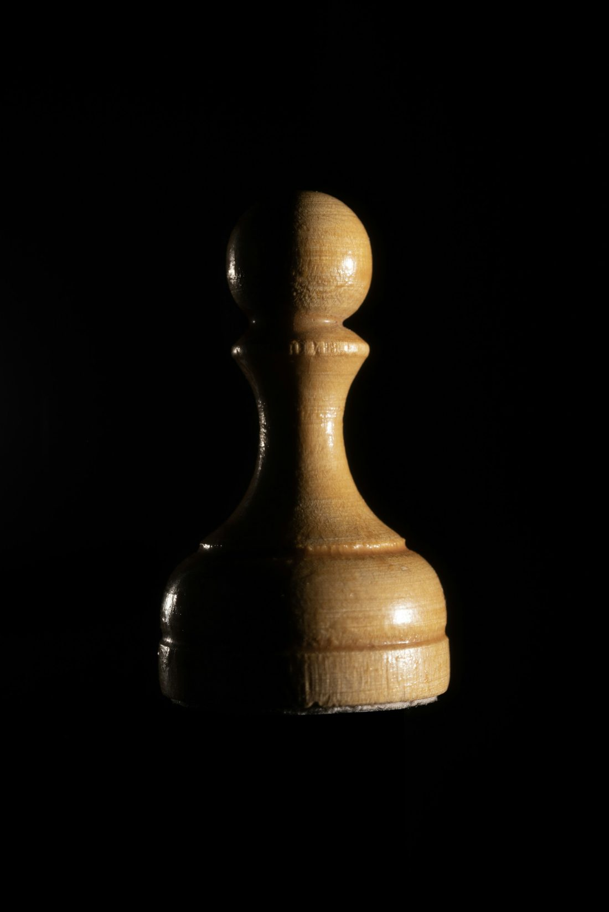

Lucerna 1.0— 3 —1… e6
In its light, a pawn casts the shadow of a king.

Lucerna is Latin for lamp. Every engine starts as a pawn. This one first taught itself, generation after generation, then learned from millions of games played by people and by Leela Chess Zero.